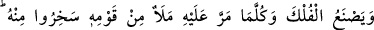
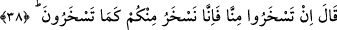

Sen şeyhle beraber oldukça kötülükten uzaksın,
Gemiye binmiş gibi olur, gece gündüz yol alırsın.
Zamanın peygamberi demek olan velîlerden ayrılma,
Kendi hünerine, kendi bilgine pek güvenme.
Arslan bile olsan kılavuzsuz yola çıkma;
Gurûra kapılır, sapıtır, hor hakir olursun.
38. Nûh gemiyi yapıyor, kavminden ileri gelenler yanından geçtikçe onunla alay
ediyorlardı. Dedi ki: “Siz bizimle alay ederseniz, sizin alay ettiğiniz gibi biz de
sizinle alay edeceğiz.”
“Nûh gemiyi yapıyor” marangozluk işleriyle uğraşıyor... Bu ifade, geminin hayret
uyandıran görünümünü gözler önüne getirmek için geçmişte şimdiki zamanın hikâyesi
sıygasıyla gelmiştir. “kavminden ileri gelenler” eşraf ve idareci konumundakiler,
“yanından geçtikçe onunla alay ediyorlardı.” gemiyi yaptığı için onunla
eğleniyorlardı.
Bu, ya geminin ne olduğunu, ne işe yarayacağını, nasıl kullanılacağını
bilmemelerinden ileri geliyordu. Çünkü “Ey Nûh! Ne yapıyorsun böyle?” diye
soruyorlardı. Nûh da onlara: “Su üstünde gidecek bir ev yapıyorum.” diyordu. Nûh’un
bu ifadesinden dolayı hayrete düşüp onunla alay ediyorlardı.
Ya da Nûh gemiyi suya oldukça uzak bir kara parçasında suyun son derece az olduğu
bir vakitte yapıyordu. İleri gelenler Nûh’un gemi yapması karşısında gülüşüyor ve:
“Bakıyoruz da peygamber olduktan sonra marangoz da oldun!” “Su nerde?”, “Suya
semer mi yapıyorsun?” diyorlardı.
Yahut da Nûh, kavmini boğulmakla uyardığı için dalga geçiyorlardı. Nûh aralarında
uzun müddet kalıp da böyle bir şeyin emaresini bile göremeyince boğulmayı
muhal/imkansız kabilinden saymışlardı. Daha sonra Nûh’un boğulmaktan kurtulmaya
yarayacak sebeplerle meşgul olduğunu görünce onun yaptığını kendileri de yaptılar.
Alay etmelerinin sebebi olarak zikredilen bu üç ihtimalin ortak noktası, o kadar büyük
meşakkatlere katlandığı halde Nûh’un bu çalışmasının neticede güzel bir semeresi
bulunacağını inkâr ediyor olmalarıdır.
Ben ister iyi olayım ister kötü, sen git kendin ol.
Herkes ne ekerse onu biçer
Sanki bir kimse: “Kavmin eziyeti son raddesine vardığında Nûh ne yaptı?” diye